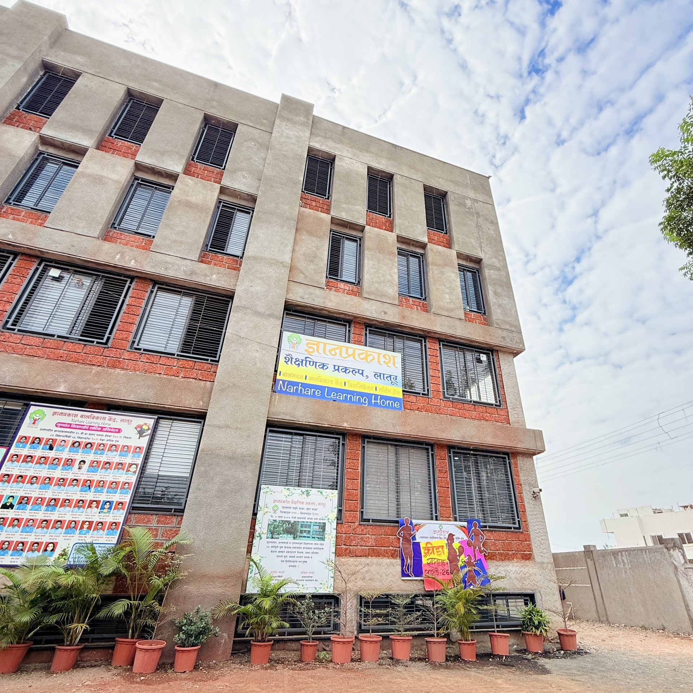

Balbhavan (Age 3–6)
Foundational play-based learning rooted in curiosity and joy.
Learn More →A center for joyful, research-informed learning in Latur since 1999.
What Dnyanprakash has built in Latur was not built easily. It was built despite limited physical infrastructure, without government funding, and against the grain of how most schools in this region have always operated. That it has earned the deep trust of parents, educators, and children over twenty-six years is not a coincidence, it is the result of a conscious, sustained commitment to doing education differently.
Read MoreExperiencing the importance of effective learning through the mother tongue, the head of the institution, Mr. Satish Narhare, began teaching mathematics in 1989 through Narhare Classes. During this time, he realized the significance of making learning enjoyable and stress-free for children. With a vision to make education engaging, meaningful, and self-motivated — where children naturally want to learn, ask questions, seek answers, and express their thoughts freely — Savita and Satish Narhare founded Dnyanprakash in 1999, starting with their own child.
Read MoreFrom the very beginning of Dnyanprakash, children's learning was linked with action and experience. Various materials are used according to the subject for that. Various reading and writing experiments were also conducted. Children get to know letters and words in kindergarten itself. After that, the children read and write sentences, and then they create stories from pictures, complete incomplete stories, write stories from points, experience writing, case writing, dialogue writing, letter writing, etc.
Read MoreFoundational play-based learning rooted in curiosity and joy.
Learn More →
Primary education with a strong language, math, and values base.
Learn More →
Rigorous SSC-aligned education with career and character guidance.
Learn More →
An extension of the Dnyanprakash classroom — supplementary programmes that carry our teaching approach beyond the school day.
Learn More →In 1999, Savita and Satish Narhare started Dnyanprakash with 26 children and one deeply held belief: that every child already carries within them everything they need to learn. What they need around them is an environment that knows how to bring it out.
Learn More